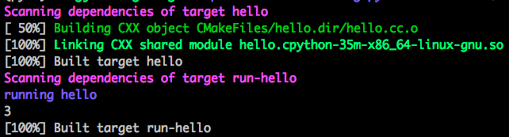

Build with CMake¶
Install CMake¶
Download
cmake-3.17.0-Linux-x86_64.shor any version above 3.0chmod +x cmake-3.17.0-Linux-x86_64.sh./cmake-3.17.0-Linux-x86_64.sh --prefix=/path/to/installModify
PATH
Build Example¶
To compile the following code
hello.cc¶
1 2 3 4 5 6 7 8 9 | #include <pybind11/pybind11.h>
int add(int i, int j) { return i + j; }
PYBIND11_MODULE(hello, m) {
m.doc() = "pybind11 hello world"; // optional module docstring
m.def("add", &add, "A function which adds two numbers");
}
|
Use the folliwng CMakeLists.txt
CMakeLists.txt¶
1 2 3 4 5 6 7 8 9 10 11 12 13 14 15 16 17 18 19 20 21 22 23 24 25 26 27 28 29 30 31 | cmake_minimum_required(VERSION 3.5)
project(hello)
# FetchContent is available from 3.11+
list(APPEND CMAKE_MODULE_PATH ${CMAKE_SOURCE_DIR})
include(FetchContent)
FetchContent_Declare(pybind11
GIT_REPOSITORY https://github.com/pybind/pybind11.git
GIT_TAG master
)
FetchContent_GetProperties(pybind11)
if(NOT pybind11_POPULATED)
FetchContent_Populate(pybind11)
endif()
list(APPEND CMAKE_MODULE_PATH "${pybind11_SOURCE_DIR}/tools")
include(pybind11Tools)
include_directories(${pybind11_SOURCE_DIR}/include)
pybind11_add_module(hello hello.cc)
add_custom_target(run-hello DEPENDS hello)
add_custom_command(
TARGET run-hello
POST_BUILD COMMAND python -c "import hello; print(hello.add(1, 2))"
VERBATIM
COMMENT "running hello"
)
|
mkdir build
cd build
cmake ..
should print something like the following
-- The C compiler identification is GNU 5.4.0
-- The CXX compiler identification is GNU 5.4.0
-- Check for working C compiler: /usr/bin/cc
-- Check for working C compiler: /usr/bin/cc -- works
-- Detecting C compiler ABI info
-- Detecting C compiler ABI info - done
-- Detecting C compile features
-- Detecting C compile features - done
-- Check for working CXX compiler: /usr/bin/c++
-- Check for working CXX compiler: /usr/bin/c++ -- works
-- Detecting CXX compiler ABI info
-- Detecting CXX compiler ABI info - done
-- Detecting CXX compile features
-- Detecting CXX compile features - done
-- Found PythonInterp: /path/to/py35/bin/python3.5 (found version "3.5.2")
-- Found PythonLibs: /usr/lib/x86_64-linux-gnu/libpython3.5m.so
-- Performing Test HAS_CPP14_FLAG
-- Performing Test HAS_CPP14_FLAG - Success
-- Performing Test HAS_FLTO
-- Performing Test HAS_FLTO - Success
-- LTO enabled
-- Configuring done
-- Generating done
-- Build files have been written to: /path/to/pybind/code/build
make run-hello
prints
Scanning dependencies of target hello
[ 50%] Building CXX object CMakeFiles/hello.dir/hello.cc.o
[100%] Linking CXX shared module hello.cpython-35m-x86_64-linux-gnu.so
[100%] Built target hello
Scanning dependencies of target run-hello
running hello
3
[100%] Built target run-hello

Output from make run-hello¶